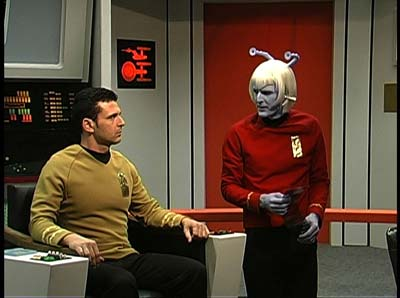
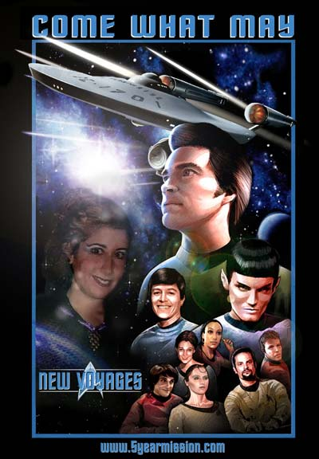

|
O
futuro de Jornada nas Estrelas?
 Durante a semana que passou, estive pensando muito no potencial cancelamento de
Enterprise e no iminente fim de quase duas dcadas de produo ininterrupta de novos episdios e filmes de
Jornada nas Estrelas. Confesso ter tido sentimentos confusos a respeito
disso. Durante a semana que passou, estive pensando muito no potencial cancelamento de
Enterprise e no iminente fim de quase duas dcadas de produo ininterrupta de novos episdios e filmes de
Jornada nas Estrelas. Confesso ter tido sentimentos confusos a respeito
disso.
Tenho a impresso de que a maioria das pessoas ir concordar com o fato de que a terceira temporada da mais nova srie da franquia foi a melhor at agora. No que tenha sido estupenda, ou mesmo comparvel aos melhores momentos da histria de
Jornada, mas ao menos apresentou um foco mais definido e desenvolveu uma linha consistente de histrias, oferecendo, vez por outra, alguns toques de brilhantismo
("Similitude" o que vem cabea quando falo isso).
A despeito da melhora, a concorrncia com "Smallville", srie baseada na adolescncia do Superman, no tem dado a
Enterprise nenhuma chance de manter a rede UPN frente de sua concorrente direta, a WB. Em outras palavras, embora
Jornada siga sendo um dos programas de maior audincia na rede de TV da Paramount, ainda assim no rende suficientes frutos para ser mantida --especialmente considerando os altos custos de sua produo.
Olhando pelo prisma da UPN, Enterprise no mereceria sequer um quarto ano. Por outro lado, se a Viacom (companhia que possui tanto a UPN, como a Paramount Pictures, alm de Blockbuster, MTV, CBS y otras cositas mas) souber orquestrar bem os interesses conjuntos de suas empresas afiliadas, far com que a srie ganhe ao menos mais uma temporada. Com isso, o programa poderia, aps a exibio em rede, ganhar o circuito de syndication e fazer mais alguns tostes, antes de ir ao mercado de DVDs.
Tendo a crer que isso que vai acabar acontecendo. A no ser que
Enterprise subitamente se torne uma febre e amplie largamente o espectro de sua audincia, considero
improvvel que ela atinja a marca de sete temporadas, como o fizeram
A Nova Gerao, Deep Space Nine e Voyager. Ser a primeira vertente televisiva da franquia a ser prematuramente cancelada desde o fim da
Srie Clssica, em 1969.
Claro, j desde o final de Deep Space Nine muitos fs tm procurado apontar culpados para a decadncia. Rick Berman e Brannon Braga foram universalmente eleitos como os "anti-cristos" de
Jornada nas Estrelas. As principais crticas so a falta de respeito ao esprito original da srie criada por Roddenberry e o total vcuo criativo sobre o qual estariam sendo construdos os episdios e a mitologia do programa.
Com efeito, inegvel que no parece mais haver "gs" na atual equipe de produo para gerar segmentos realmente originais --na onda dos ambientalistas, a reciclagem parece ser a palavra de ordem no estdio de filmagem e, sobretudo, no escritrio dos roteiristas. Em contrapartida, tenho srias dvidas de que esse seja o real problema na decadncia de
Jornada nas Estrelas.
Temo que a situao seja muito mais complicada e, no momento, simplesmente incontornvel. A verdade que o pblico comum --aquele no composto por fs ultra-especializados e que perfaz a grande audincia dos canais de televiso-- simplesmente no agenta mais
Jornada nas Estrelas. So duas dcadas de produo ininterrupta, com vrios anos de exibio simultnea de at duas sries diferentes! Com ou sem
"Jornada nas Estrelas" no nome, ningum em s conscincia pode acreditar, mesmo num nvel subconsciente, que uma nova produo baseada nesse universo ficcional tenha um propsito criativo, em vez de ser mais um caa-nqueis de uma empresa que quer sugar uma marca at sair o ltimo centavo. Ningum hoje acredita que
Jornada nas Estrelas tenha uma justificativa para continuar sendo produzida.
Caso isso seja verdadeiro (e acho que a audincia parece demonstrar o fato semana aps semana), no h nada que Rick e Brannon possam fazer com
Enterprise para torn-la um sucesso. Ela est realmente condenada.
E a situao passa a ser anloga do cancelamento da Srie Clssica. Numa tentativa desesperada de salvar o programa, em 1968, os produtores acabaram "idiotizando-o", na tentativa de torn-lo mais atraente ao pblico. Felizmente a estratgia no deu certo e a srie acabou cancelada, salvando essa espetacular criao de se tornar um pastiche que se tornaria mais
e mais estpido a cada nova temporada. O terceiro ano da Srie Clssica considerado a pior, mas ainda manteve dignidade suficiente para que um dia
Jornada nas Estrelas pudesse renascer e se tornar o incrvel sucesso que acabou sendo.
Diante dessa bela lio tirada do prprio passado da franquia, tudo que posso esperar de Rick e Brannon que eles no caiam na mesma armadilha de seus predecessores e no "idiotizem" a srie a ponto de me fazer desistir dela. Talvez seja uma tola esperana, pois at agora a dupla B&B j deu vrios sinais de que tem um plano consistente de estratgias esdrxulas para tentar "salvar" seu programa. Mostrar T'Pol nua e constranger os personagens tm sido as rotinas favoritas at aqui. Nada que no possa ser superado, mas bom lembrar que isso no razo para otimismo: sempre d para ficar pior.
De toda maneira, com a honra mais ou menos intacta, acho que poucos seriam capazes de ir contra a idia de que o ciclo de sucesso de
Jornada nas Estrelas est chegando ao fim. Mesmo considerando o mais otimista dos cenrios
(Enterprise resiste a sete temporadas), no vejo a Paramount embarcando imediatamente na produo de um outro programa baseado na franquia. E a cinessrie tambm est longe de ser retomada, com o fiasco de
"Nmesis".
E ento chegamos aos meus sentimentos confusos. Por um lado, acho positivo que
Jornada possa dar uma parada antes que se torne degradada demais para manter algum respeito diante do pblico. Por outro, no sei bem quais so as implicaes para o futuro desta paixo que, afinal de contas, nos rene diariamente aqui no
Trek Brasilis. Se as produes forem interrompidas, os fs simplesmente vo voltar para casa, cabisbaixos, esperando dias melhores?
At uns dias atrs, eu temia que essa resposta fosse afirmativa. Hoje j no temo mais. E o que me fez mudar de idia foi a iniciativa de alguns fs extremamente dedicados localizados em Nova York, nos Estados Unidos. Esse grupo acaba de concluir a produo de um episdio indito da
Srie Clssica de Jornada. Kirk, Spock e McCoy esto de volta a seus velhos postos, interpretados por novos atores. E, de alguma maneira, ao ver o episdio, pude sentir que a magia daqueles personagens e daquela srie ainda est muito viva, a despeito de tudo.
No foi o primeiro esforo realizado por fs no sentido de produzir episdios de
Jornada. Antes deles, j houve produes ambientadas no sculo 24 (feitas majoritariamente com atores em cenrios digitais inseridos via uso de
fundo azul) e pelo menos uma delas, "Starship
Exeter", reproduzindo o estilo do sculo 23. Com a revoluo digital, essas produes so as verses modernas das antigas fan-fictions, que tanto impulsionaram o interesse por
Jornada durante o hiato de dez anos entre o cancelamento da srie original, em 1969, e a estria do primeiro filme de cinema, em 1979.

Em "Starship Exeter", alguns cenrios foram reconstrudos, mas as histrias no se passam na Enterprise. A nave-ttulo comandada pelo capito Garrovick e tem um primeiro-oficial Andoriano. Um episdio j foi lanado e pelo menos outros
dois esto em produo. O projeto j foi objeto de reportagens em diversos veculos de comunicao nos EUA.
A mais nova produo na linha 'Jornada amadora', "New
Voyages", promete expandir ainda mais esse potencial. Alm de se aproveitar das bases slidas da srie original, o programa extremamente refinado em termos de valores de produo. Praticamente todos os cenrios da Enterprise original foram reconstrudos, com riqueza de detalhes, e os atores interpretando nossos personagens favoritos, embora distantes da qualidade dos originais, do um sabor especial produo.
Os efeitos especiais esto no nvel do que se v modernamente em produes profissionais. E os atores convidados, ao menos no primeiro episdio, so veteranos da
Srie Clssica! John Winston, que interpretou Kyle na srie original, aqui o capito Matt Jefferies; Larry Nemecek, que j escreveu vrios livros de
Jornada, interpreta Cal Strickland; e Eddie Paskey, que interpretou o sr. Leslie, tripulante da srie original, aqui aparece como o pai do personagem, almirante Leslie!
O primeiro episdio, "Come What May" um sucesso absoluto. O site j registra mais de 1,5 milho de downloads, no mundo inteiro. A equipe pretende lanar um DVD especial com o piloto, e toda a arrecadao ser doada para um fundo assistencial de ajuda aos filhos dos astronautas mortos no acidente com o nibus espacial Columbia. No h lucro envolvido, enfatizam os produtores, na tentativa de evitar um processo da
Paramount.

A equipe j est ativamente envolvida na produo do segundo episdio da srie, que deve ir ao ar em 3 de julho deste ano. Em dezembro, deve chegar o segundo episdio de
"Starship Exeter", outra produo com sabor Srie Clssica.
Claro, que ningum faa o download esperando encontrar um "The City on the Edge of
Forever"; ainda h uma distncia enorme de qualidade entre esses episdios amadores e at mesmo
a srie Enterprise, em termos de roteirizao e interpretao. Mas ainda assim se v um potencial.
Resta saber se a Paramount vai deixar a festa rolar solta ou vai processar e coagir cada grupo de fs que fizer uma coisa parecida. Se o estdio for esperto, deve nutrir e incentivar esses "produtores" --contanto que eles no comecem a ganhar dinheiro custa da marca, esse trabalho ser instrumental para manter
Jornada viva nos prximos anos, enquanto a franquia ainda no tiver recuperado fora a ponto de justificar um produto comercialmente vivel.
De um jeito ou de outro, os fs mais uma vez esto provando que nada --nem mesmo a
superexposio e a inabilidade de produtores e estdios-- podem fazer morrer uma idia to poderosa quanto a que permeia
Jornada nas Estrelas.
Sorte a nossa.
Salvador
Nogueira, jornalista, escreve regularmente
sobre
a nova srie de Jornada nas Estrelas para o Trek
Brasilis
|